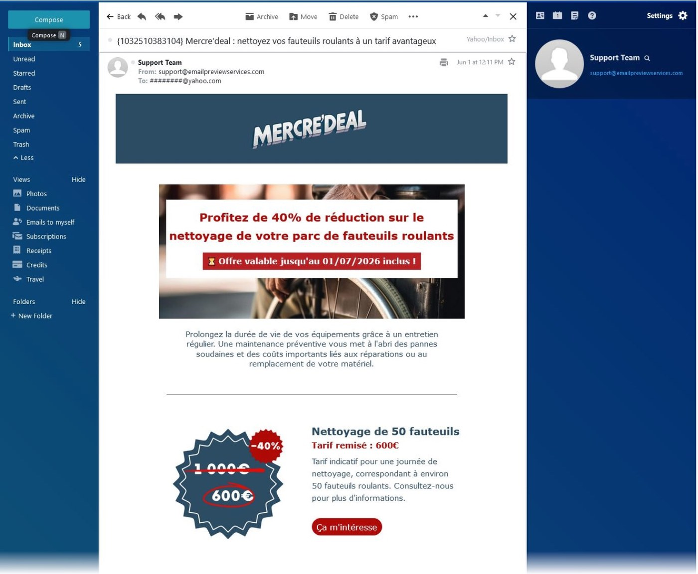
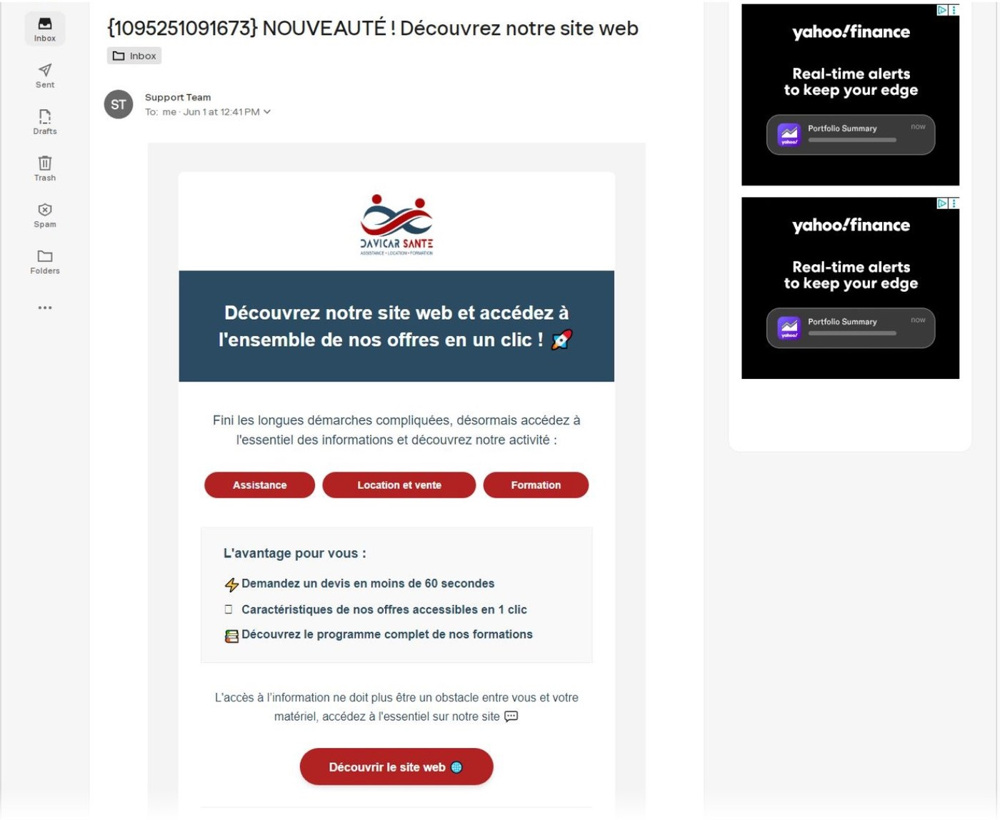
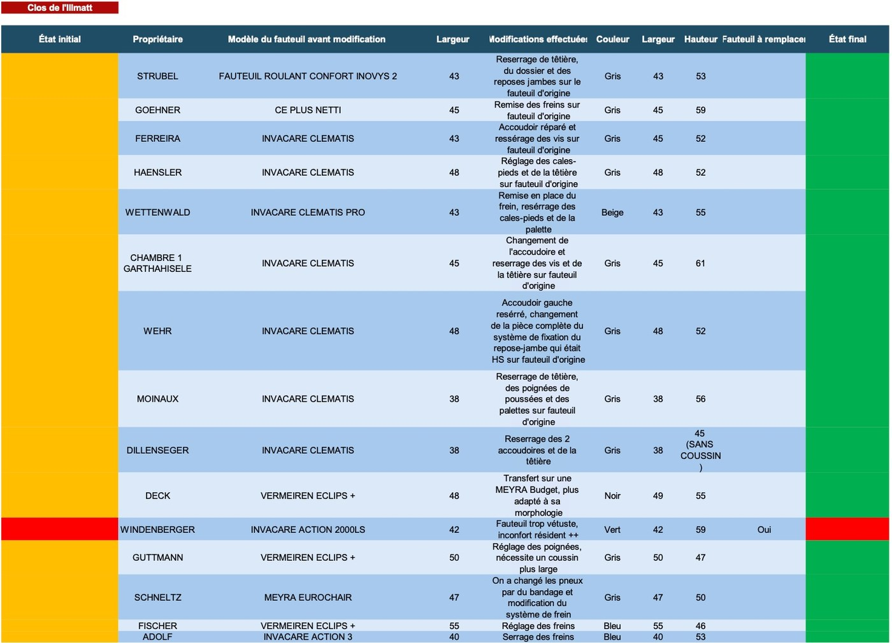

Marketing client & e-mailing
Concevoir et piloter des campagnes ciblées (Brevo), de la sélection des offres à la rédaction percutante.
Compétence · Les coulisses
La confiance se gagne, puis se cultive.
Gérer la relation client, c'est placer le client au centre de la démarche commerciale : comprendre ses besoins, entretenir un lien régulier et bâtir une confiance durable. Cela mêle communication ciblée, suivi rigoureux et aisance relationnelle — de la campagne d'e-mailing au tableau de bord de suivi, jusqu'au contact direct sur le terrain.
Compétences développées
Au générique de cette compétence — ce que ces réalisations m'ont appris
Concevoir et piloter des campagnes ciblées (Brevo), de la sélection des offres à la rédaction percutante.
Structurer une base de contacts et automatiser les envois pour communiquer efficacement et à grande échelle.
Bâtir une base de données dynamique (Excel) pour suivre un parc matériel et formuler des recommandations.
Instaurer un climat de confiance au contact direct des professionnels de santé et fidéliser sur le long terme.
Dans une optique de développement commercial, il était crucial de ne pas se concentrer uniquement sur l'acquisition, mais aussi sur la fidélisation. J'ai donc pris l'initiative de structurer nos offres promotionnelles à travers des campagnes d'e-mailing régulières, pensées pour maintenir un lien direct et durable avec nos clients.
J'ai piloté ces campagnes de A à Z via la plateforme Brevo. Ma démarche s'articule en trois temps : d'abord, une phase d'analyse pour sélectionner les équipements médicaux les plus pertinents pour les besoins de nos clients (EHPAD et professionnels de santé). Ensuite, l'application stricte de la méthode KISS (Keep It Super Simple) dans la conception visuelle et rédactionnelle, afin de garantir un message percutant et compris en un coup d'œil. Enfin, j'ai segmenté et structuré notre base de données pour mettre en place une automatisation efficace de nos envois.
Ce projet m'a permis de transformer une base de contacts en un véritable levier de croissance. J'ai développé de solides compétences en marketing client et en conception de campagnes numériques. Au-delà de l'apprentissage technique de Brevo, j'ai surtout intégré l'importance de la simplicité et de l'automatisation pour communiquer efficacement.


Pour garantir un niveau de service irréprochable et anticiper les attentes de nos clients, j'ai identifié le besoin de structurer notre suivi. J'ai donc pris l'initiative de créer un outil d'inventaire sur-mesure, véritable levier pour conseiller nos partenaires et assurer une maintenance efficace.
Ma démarche s'est articulée entre le terrain et l'analyse de données. J'ai mené plusieurs visites d'établissements pour réaliser un audit physique et recenser l'intégralité des équipements. J'ai ensuite structuré ces informations dans une base de données Excel dynamique, en intégrant un suivi précis de l'état du matériel « avant et après » notre intervention. Ce tableau de bord en temps réel a permis non seulement de formuler des recommandations d'achat ciblées, mais aussi de prouver concrètement à nos clients l'efficacité de nos services.
Ce projet au contact direct des professionnels de santé a été déterminant pour ma posture commerciale. Au-delà de la rigueur et de l'organisation requises pour gérer des données, j'ai considérablement renforcé mon aisance relationnelle. J'ai compris qu'un accompagnement fluide et structuré était la clé pour instaurer un climat de confiance et fidéliser une clientèle B2B sur le long terme.
